This document provides a comprehensive guide to all environment variables that control the Signal trading system's behavior, API integrations, and feature flags. The system uses 67+ environment variables to configure everything from database connections to AI model selection and trading strategy parameters.
For information about Docker deployment and process management, see Docker and Process Management. For details about the build system, see Build System and Dependencies.
The environment configuration system operates through three primary layers: environment variables, Redis-based runtime settings, and feature flag transformations that control both trading logic and user interface behavior.

The environment variables are organized into 13 distinct categories, each controlling specific aspects of the trading system:
| Category | Variables | Purpose |
|---|---|---|
| Database Configuration | 4 variables | MongoDB and Redis connections |
| API Keys | 11 variables | AI providers and external services |
| Social Media | 5 variables | Mastodon and Telegram integration |
| Security & Debug | 3 variables | JWT, licensing, and debug modes |
| Trading Configuration | 5 variables | Cryptocurrency pair enablement |
| Webhook Integration | 2 variables | External trading system communication |
| App Features | 2 variables | Frontend application control |
| Prefetch Control | 4 variables | Data fetching optimization |
| Chat Features | 9 variables | AI consultation capabilities |
| Telegram Features | 5 variables | Bot notification control |
| Bootstrap | 1 variable | System initialization |
| Ladder Configuration | 4 variables | Trading ladder parameters |
| Report TTL | 3 variables | Cache duration settings |
The system requires connections to MongoDB for persistent storage and Redis for configuration and caching.

MongoDB Configuration:
CC_MONGO_CONNECTION_STRING: Full MongoDB connection string including authentication and database nameSignalDbService and BacktestDbService for trade history and performance analyticsRedis Configuration:
CC_REDIS_HOST, CC_REDIS_PORT: Redis server connection detailsCC_REDIS_USER, CC_REDIS_PASSWORD: Authentication credentialsSettingsConnectionService extending BaseMap with cc-settings namespaceThe system supports multiple AI providers for trading decision-making, with configurable API keys for each service.

Supported AI Providers:
openai/gpt-oss-120b and DeepSeek modelsgpt-oss:120b and deepseek modelsThe InferenceMetaService handles model selection based on isInferenceSelection0 through isInferenceSelection7 feature flags.
Trading behavior is controlled through cryptocurrency pair enablement, webhook integration, and ladder configuration parameters.

Trading Pair Control:
CC_ENABLE_TRADE: Master switch for all trading functionalityCC_ENABLE_BTCUSDT, CC_ENABLE_ETHUSDT, etc.SignalLogicService.commitBuySignal() to filter allowed trading pairsWebhook Configuration:
CC_WEBHOOK_URL: External trading system endpoint for order executionCC_WEBHOOK_ENABLE: Boolean flag to activate webhook integrationWebhookService for external system communicationLadder Trading Parameters:
CC_LADDER_LOWER_STEP, CC_LADDER_UPPER_STEP: Price step calculationsCC_LADDER_BUY_USDT: Default buy amount in USDTCC_LADDER_COMMISSION: Commission rate for P&L calculationsThe system integrates with Telegram for notifications and Mastodon for market sentiment analysis.

Telegram Bot Setup:
CC_TELEGRAM_BOT: Bot username or identifierCC_TELEGRAM_TOKEN: API token from BotFatherCC_TELEGRAM_CHANNEL: Target channel for notificationsTelegramWebService for publishBuySignal(), publishCloseNotify(), etc.Mastodon Integration:
CC_MASTODON_INSTANCE: Mastodon server URLCC_MASTODON_ACCESS_TOKEN: Authentication tokenMastodonService for fetch_mastodon_news() functionalityTelegram Feature Control:
FeatureConnectionService with getIsTelegram*Enable() methodsTelegramWebServiceThe system provides granular control over AI consultation features and data prefetching through environment-controlled feature flags.

Chat Feature Control:
CC_CHAT_ENABLE_LONG_SIGNALS, CC_CHAT_ENABLE_SHORT_SIGNALS, CC_CHAT_ENABLE_SWING_SIGNALS: Trading signal data accessCC_CHAT_ENABLE_MASTODON_NEWS, CC_CHAT_ENABLE_TWITTER_NEWS: Social media sentiment analysisCC_CHAT_ENABLE_VOLUME_DATA, CC_CHAT_ENABLE_WHALE_DATA: Market microstructure analysisCC_CHAT_ENABLE_PRICE_DATA, CC_CHAT_ENABLE_SLOPE_DATA: Technical analysis dataPrefetch Optimization:
CC_ENABLE_TWITTER_PREFETCH, CC_ENABLE_MASTODON_PREFETCH: Social media data cachingCC_ENABLE_PRICE_FUNCTION_PREFETCH, CC_ENABLE_TREND_FUNCTION_PREFETCH: Market data cachingAgent Tool Integration:
fetch_*_term_signals, fetch_*_history, fetch_mastodon/twitter_news, fetch_volume/whale/book_dataThe system includes security controls, debug settings, and application feature toggles for production deployment.
| Variable | Purpose | Integration Point |
|---|---|---|
CC_ENABLE_DEBUG |
Debug mode activation | Logging and error reporting |
CC_JWT_SECRET |
JSON Web Token signing key | Authentication middleware |
CC_LICENSE_KEY |
System licensing validation | Application startup |
CC_BOOTSTRAP_FINISH_ORDERS |
Bootstrap completion flag | System initialization |
CC_ENABLE_SETUP_APP |
Setup interface availability | Frontend application routing |
CC_ENABLE_CHAT_APP |
Chat interface availability | Agent consultation access |
Report TTL Configuration:
CC_MASTODON_REPORT_TTL: Cache duration for Mastodon reportsCC_TWITTER_REPORT_TTL: Cache duration for Twitter reportsCC_TREND_DATA_REPORT_TTL: Cache duration for trend analysis reportsThese variables control cache expiration for social media and market data reports, balancing data freshness with API rate limits.
Environment variables are transformed into runtime settings through the Redis-based configuration system, enabling dynamic behavior modification without restart.

Configuration Flow:
SettingsConnectionService provides type-safe access to configuration valuesFeatureConnectionService manages 8 feature flag methods for advanced behavior controlKey Service Methods:
SettingsConnectionService.getValue(): Generic configuration retrievalFeatureConnectionService.getIsTelegramBuySignalEnable(): Notification controlFeatureConnectionService.getIsSignalLogicTakeProfitEnable(): Trading logic controlThis architecture enables dynamic configuration changes through the Redis store while maintaining type safety and consistent behavior across all system components.